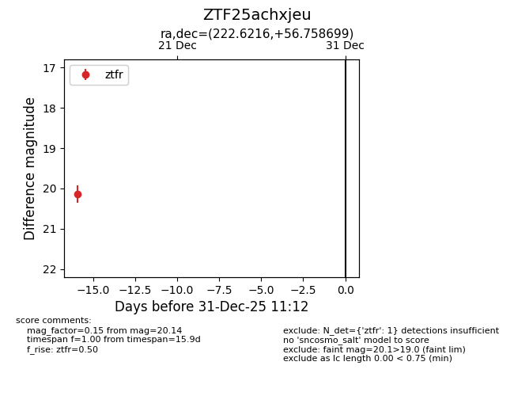
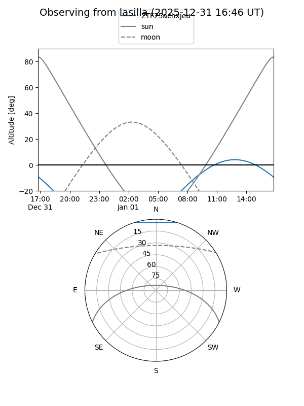
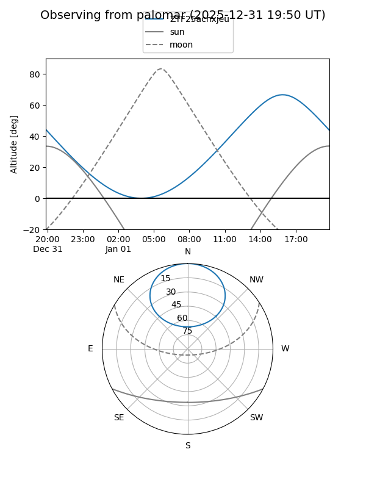

ZTF25achxjeu
Target ZTF25achxjeu at 2025-12-18 11:18
Aliases and brokers:
FINK: fink-portal.org/ZTF25achxjeu
Lasair: lasair-ztf.lsst.ac.uk/objects/ZTF25achxjeu
ALeRCE: alerce.online/object/ZTF25achxjeu
alt names
ZTF25achxjeu (ztf,fink_ztf)
Coordinates:
equatorial (ra, dec) = 222.6216,+56.75870
equatorial (HMS+DMS) = 14:50:29.20,+56:45:31.31
galactic (l, b) = (95.6395,+53.59869)
Photometry
last ztfr=20.14
1 ztfr detections
Lightcurve

Visibility


Additional plots